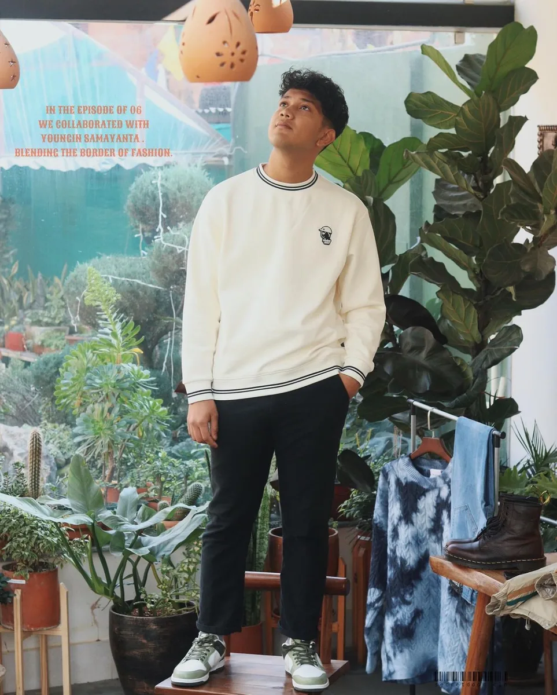

Growth systems
CRM and outreach workflows for clearer business development.
A growth system is only useful when it helps people follow up, learn, and make decisions without chaos.
Challenge
Lead generation and international outreach can become scattered across messages, sheets, and memory.
Process
Map the pipeline, define contact stages, tighten scripts, and design repeatable follow-up rhythms.
Impact
Cleaner visibility, fewer missed opportunities, and a more confident business development loop.